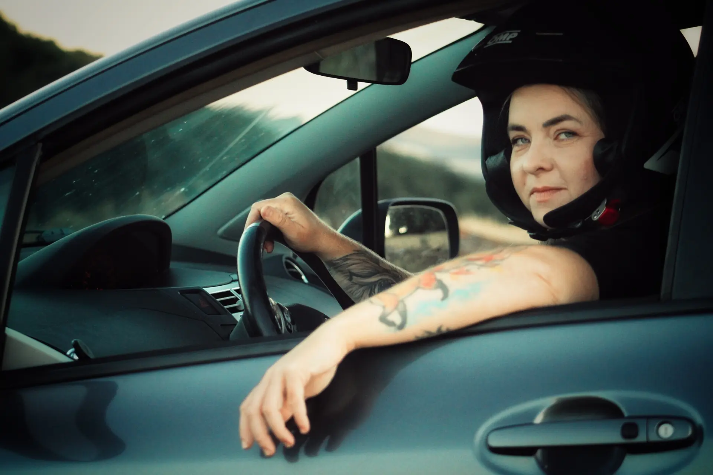

Projekt 100 kôl / Ročný jazdecký development
Zo strachu za volant. Z prvého rozjazdu na pódium. Teraz sa chcem naučiť naozaj pretekať.
Projekt 100 kôl je ročný program systematického jazdeckého rozvoja Karolíny Gregor.
- 10
- štartov v roku 2026
- 1
- pódium
- ≈ 1
- rok od vodičáku

Prečo
Prečo vznikol Projekt 100 kôl
Kedysi som sa bála šoférovať. Vodičák bol splnený sen a rozhodnutie prestať čakať na „potom“. Po deviatich mesiacoch som stála na štarte prvých pretekov.
Samotné jazdenie už nestačí. Potrebujem systematický tréning, dáta a človeka, ktorý bude môj vývoj riadiť.
Talent ani odhodlanie nenahradia tréning. Pomôžte mi zistiť, kam sa môžem dostať za jeden rok odbornej práce.
Doteraz
Doterajšia cesta
- 01Strach zo šoférovania
- 02Vodičák
- 03Tichoň
- 04Prvé preteky
- 05Prvé pódium
- 06Projekt 100 kôl
Počas roka
Čo sa bude počas roka diať
Fyzická príprava
Mentálna príprava
Simulátor
Telemetria a dáta
Rozbor videí a výsledkov
Merateľný pokrok
Financovanie
Na čo zbierame
Cieľ Donio kampane
15 000 €
12 mesiacov systematického jazdeckého developmentu.
3 750 €
prvé tri mesiace
7 500 €
pol roka
11 250 €
deväť mesiacov
15 000 €
celý ročný program
Prvý kritický míľnik: 3 750 €. Tri mesiace tréningu sú minimálne obdobie, za ktoré už možno vyhodnotiť skutočný posun.
Chcem vedieť o spusteníZa podporu
Ukážka odmien za podporu
- 01Dobrý pocit a pravidelné reporty
- 02Podpiskarta
- 03Tričko alebo mikina
- 04Zážitkové odmeny
- 05Firemné partnerstvo na konkrétny mesiac
Toto je len ukážka. Kompletný výber všetkých odmien bude na Doniu.
Dôkaz
Merateľný experiment
Projekt nebude iba sled fotografií z pretekov. Počas roka budeme zverejňovať:
- časy a výsledky
- jazdecké dáta
- tréningové ciele
- chyby a ich nápravu
- mesačné zhrnutia pokroku
Na konci má byť viditeľné, čo dokáže rok systematickej práce s jazdkyňou na začiatku jej vývoja.
Pre firmy
Staňte sa partnerom jedného mesiaca
Každý partner podporí konkrétnu časť ročnej cesty a dostane výstupy počas svojho mesiaca.
- partnerstvo spojené s konkrétnym obdobím projektu
- priebežné výstupy a obsah
- partnerský PDF materiál
- priamy kontakt
Ďalej
Čo po projekte zostane
Nezostane iba odjazdená sezóna. Zostane verejný záznam celého procesu a dôkaz, že cesta od strachu za volantom k pretekaniu sa dá zvládnuť systematicky.
Zostanú skúsenosti, dáta, pomenované chyby a postup, ktorý sa dá opakovať, porovnávať a ďalej zlepšovať. Ďalší človek tak nebude musieť začínať úplne naslepo.
Ďalší krok
Pred rokom bol cieľ sadnúť si za volant. Dnes je cieľ zistiť, kam sa dá dostať za 100 kôl systematickej práce.
Chcem vedieť o spusteníNemôžete prispieť? Pošlite projekt človeku alebo firme, ktorých by mohol zaujať.
Pred spustením
Chcem sledovať cestu
Oznámenie spustenia Donia, mesačné aktualizácie, neskôr ebook a informácie o pripravovaných programoch.